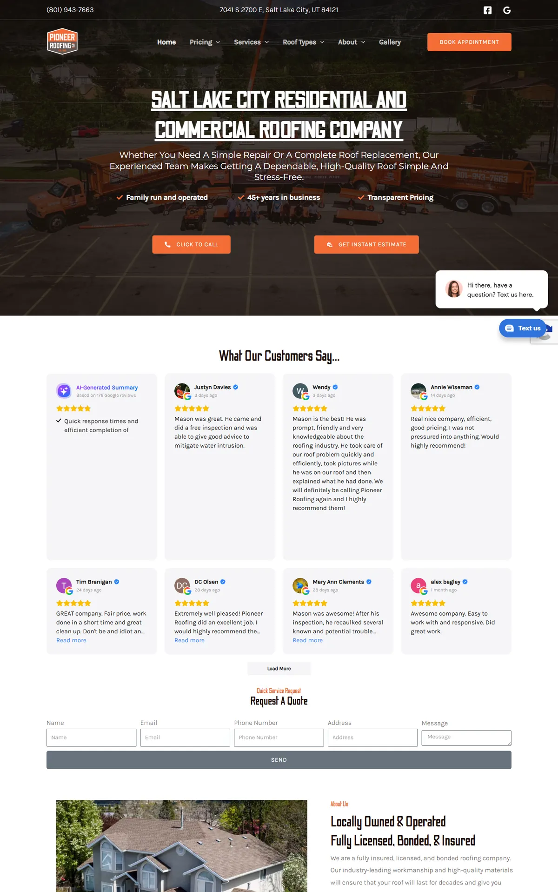
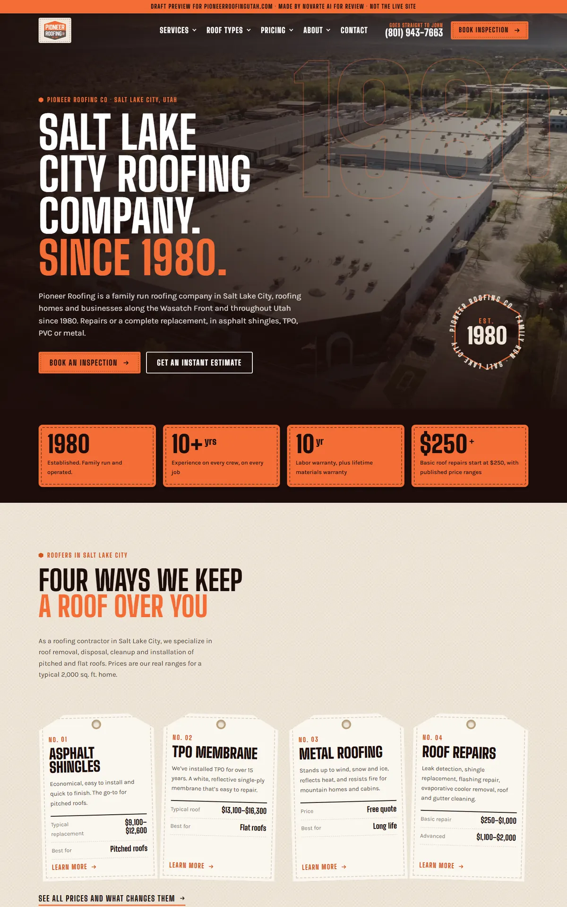
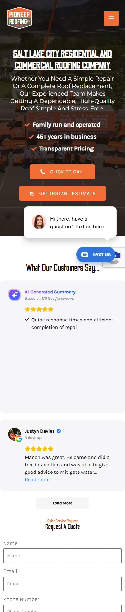
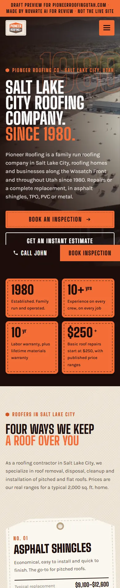

Start with the report to see what was wrong, then what we fixed, then the before-and-after. When you're ready, open the new website. Nothing here is live.
The website plan report from the 5 Oct 2026 audit. It's the reason behind most of the changes below.
Pioneer Roofing Co · Salt Lake City · Prepared 17 Oct 2026. Business facts and audit from 5 Oct 2026; search numbers and Google results from 14 Oct 2026. Draft for Angelo's review.
roofing company salt lake city (170 for “roofing company”, 210 for “roofing company near me”).From the Google profile on 5 Oct 2026. Confirm with the client before it goes on the site. The phone is copied exactly as given (+1801-943-7663). Ask the client how they want it shown; do not reformat it without their OK.
roofing company salt lake cityroofers salt lake city, roofing contractor salt lake cityThe home page should link to every service page and the cost page. Show the rating and review count once the client confirms them.
| # | Service | Target keyword | Searches | "Near me" | Exact keyword | Status |
|---|---|---|---|---|---|---|
| 1 | Roof repair | roof repair salt lake city | 320 | 110 | 140 | Has a page |
| 2 | Roofing repairs | roofing repairs salt lake city | 320 | 110 | 70 | Has a page |
| 3 | Metal roofing | metal roofing salt lake city | 170 | 10 | 40 | Has a page |
| 4 | Roof replacement | roof replacement salt lake city | 50 | 70 | 20 | Has a page |
| 5 | Asphalt shingles | asphalt shingles salt lake city | 90 | 10 | – | Has a page |
| 6 | Roof inspection | roof inspection salt lake city | 70 | 10 | 10 | Has a page |
| 7 | Roofing types | roofing types salt lake city | 50 | – | – | Has a page |
| 8 | Commercial roofing | commercial roofing salt lake city | 20 | 10 | 10 | Has a page |
| 9 | Residential roofing | residential roofing salt lake city | 10 | 10 | 10 | Has a page |
| 10 | Tpo membrane | tpo membrane salt lake city | 10 | – | – | Has a page |
Searches and "near me" are inside Salt Lake City. "Exact keyword" = searches for the keyword with the city name, across Utah (for services read from their site: inside Salt Lake City). "–" = fewer than 10 a month; "10" is Google's lowest number. One page per service. Only build a page if the business really does that service.
| Search | Use? | Where |
|---|---|---|
| Residential roof repair salt lake city | Yes | Matching service page, as a section |
| Best roof repair salt lake city | Show, don't claim | Use real reviews, photos and process. Don't claim "the best". |
| Affordable roof repair salt lake city | If true | Only with real offers from the client |
| Park City Roofing | Skip | Another company in this list |
| On the Top Roofing | Skip | Another company in this list |
| Cheap roof replacement salt lake city | If true | Only with real offers from the client |
| Mobile home roof replacement salt lake city | Ask client | Only if they do this work |
| Best roof replacement salt lake city | Show, don't claim | Use real reviews, photos and process. Don't claim "the best". |
| Mobile roof replacement salt lake city | Ask client | Only if they do this work |
| Roof replacement salt lake city cost | Real prices only | Cost page |
Sorted automatically. Check any "company name" row by eye before skipping it.
| Keyword | Searches Salt Lake City | All Utah | City version | All Utah |
|---|---|---|---|---|
| roof replacement cost | 30 | 170 | roof replacement cost salt lake city | – |
| roof repair cost | 10 | 30 | roof repair cost salt lake city | – |
| new roof cost | 20 | 70 | new roof cost salt lake city | – |
| metal roof cost | 20 | 90 | metal roof cost salt lake city | – |
One cost page covering all of these. Check first whether one of the existing pages already covers cost; if so, improve it instead of adding a new one. Cost searchers are close to buying. Use only real prices from the client. If the client will not share prices, explain what changes the price and invite a free estimate instead.
| City | Keyword 1 | All Utah | Keyword 2 | All Utah |
|---|---|---|---|---|
| South Jordan | roof repair south jordan | 30 | roof replacement south jordan | – |
| Sandy | roof repair sandy | 30 | roof replacement sandy | – |
| Draper | roof repair draper | 10 | roof replacement draper | – |
Build a city page only if the business really works there. South Jordan has the most searches (30 for "roof repair south jordan" across Utah). Each page needs real local content (jobs done there, neighborhoods), not the Salt Lake City page with the name swapped.
| Keyword | Avg. words (top pages) | Have FAQ | Show prices |
|---|---|---|---|
| roof repair salt lake city | ~1,654 | 2 of 3 | 0 of 3 |
| roof replacement salt lake city | ~1,841 | 3 of 3 | 0 of 3 |
| roof replacement cost salt lake city | ~1,728 | 2 of 3 | 2 of 3 |
Use competitor headings for topic ideas only. Do not copy them. Some name other companies, owners or promotions. Bios, promotions and project photos go in only with real facts from the client.
| Question | Use? | Where |
|---|---|---|
| How can I fix cracks in my roof? | Yes | Matching service page |
| How long do roofs last in Utah? | Yes | Matching service page |
| How to pay for roof repair? | If client confirms | Only what the client really offers |
| What does "roof repair" mean? | Yes | Matching service page |
| What is the average cost of replacing a roof in Utah? | Real prices only | Cost page |
| What is the 25% rule for roofing? | Check Utah rules | Matching service page |
| Is $50,000 for a new roof good? | Real prices only | Cost page |
| What is the average cost to replace a roof on a 2000 square foot home? | Real prices only | Cost page |
| What is the typical cost of a new roof for a single-family home in Utah? | Real prices only | Cost page |
| What is the 25% roof rule in Florida? | Skip | About Florida, not Utah |
| What time of year is the cheapest to replace a roof? | Real prices only | Cost page |
| Who are some reputable roofers in Salt Lake City, UT? | Skip as written | Cover the intent on the home page (reviews, why choose us) |
Search numbers: Google Ads monthly searches, pulled 14 Oct 2026. Questions and page topics: live Google results in Salt Lake City, 14 Oct 2026.
roofing company salt lake city.Each problem from the report or the site review, and what the new site does about it.
| Problem | What we did | Status |
|---|---|---|
| First draft looked templated and plain | Redesigned like a heritage workwear brand: a turning Est. 1980 hexagon seal, stitched patches, the roof types as hang tags with the real published prices, a ledger-style price table and a big call-John section | Fixed |
| Only 1 of 51 pages names Salt Lake City | Home and the 10 main service pages now have Salt Lake City in the title, H1 and first paragraph | Fixed |
| Mobile speed 40/100 | Plain HTML, one CSS file, no Elementor, WebP photos under 150 KB, lazy-loaded | Fixed, re-test after go-live |
| 45 of 50 pages have no meta description | Hand-written for home and service pages; others written from each page's own text | Fixed |
| Images missing alt text | Every image has descriptive alt text plus width and height | Fixed |
| Real prices hidden on one page | Price ranges shown on the home page and in the service cards; pricing page targets "roof replacement cost Salt Lake City" | Fixed |
| Years in business contradict (nearly 40, over 40, 45, 45+) | New copy says "since 1980", from the logo | Needs client |
| Two warranty versions (10-20 yr flat / 40 yr shingles vs lifetime materials + 10 yr labor) | Only the 10-year labor + lifetime materials wording used | Needs client |
| TPO price line reuses the steep-pitch description | Description left off the TPO price | Needs client |
| Two commercial pages compete (commercial-roofing vs your-go-to-solution...) | Both kept on their URLs; merge needs a redirect | Needs Angelo |
| Broken link to /careers/ (404) on the About page | Link removed | Fixed |
| Thank-you page and home-2 copy indexable | Marked noindex, left out of the sitemap | Fixed |
| No schema beyond Yoast basics | RoofingContractor (2 offices), Service, FAQPage, BlogPosting, BreadcrumbList | Fixed |
The home page, old site on the left and the new design on the right. Screenshots from 16 to 17 Oct 2026.




Jump straight into key pages of the new site. Use the browser back button to come back here.
These need answers before the site goes live. Full details are in the notes file in OUTBOX.